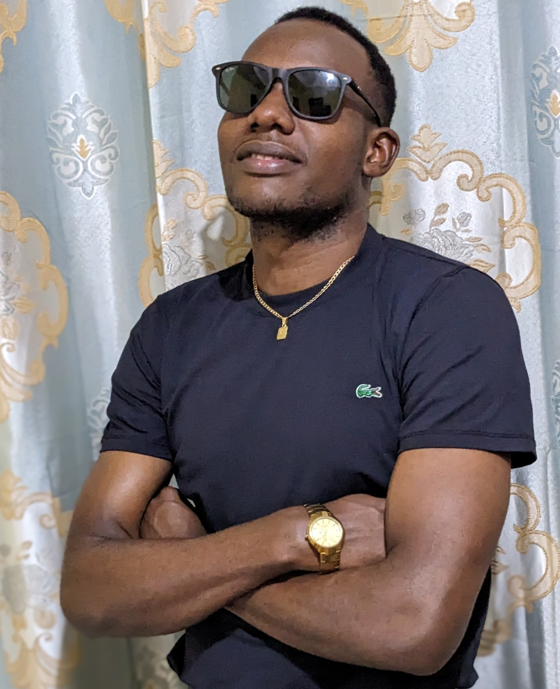

Web-developer & Web-desighner
Let us work together for future
that aimed to change our life,
am here to change your businesses
to be technological and globaly.
I build websites that change lives.
Connect with MeI am a passionate web developer and designer from Mwanza, Tanzania. My journey began with a simple desire—to change my own life through code. Today, I use technology to uplift others, from social impact foundations to businesses across Tanzania and beyond.
Skills: HTML, CSS, JavaScript, Python, WordPress, Figma
Mission: To transform lives through meaningful technology.
Vision: A digital world where every soul has a voice and value.
A nonprofit website for helping orphans and street children.
Tourism company website with trip planner and booking features.
Shop website for direct and global product ordering.